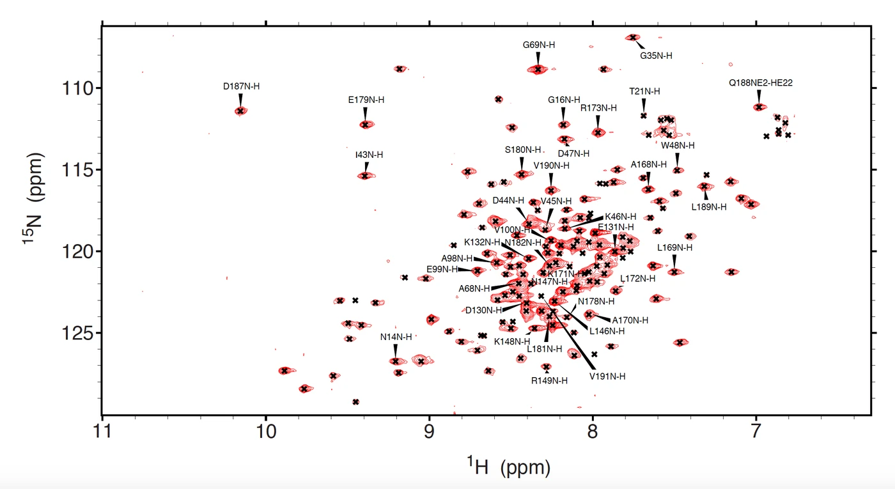
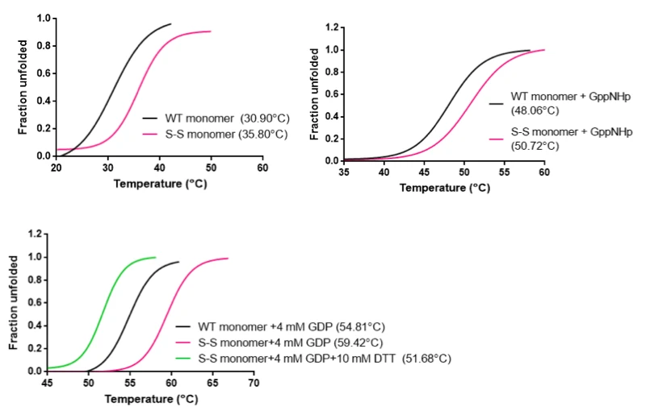
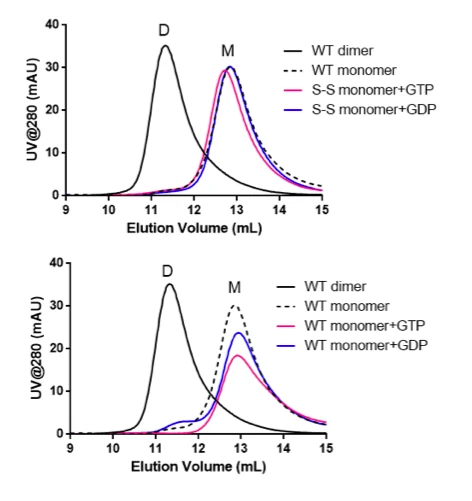
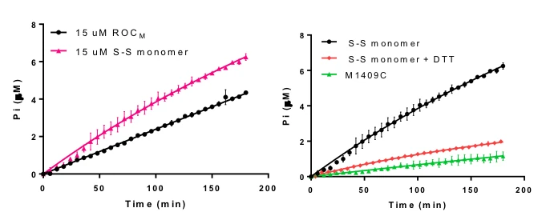

Context
LRRK2 is a large multidomain kinase linked to Parkinson's disease. The ROC domain is a GTPase that regulates the protein's activity and dimerization.
I used NMR to study the ROC domain's structure and dynamics, complementing SEC-MALS, thermal-shift, and GTP-hydrolysis experiments.
What I did
- Expressed and purified LRRK2-ROC constructs for NMR.
- Collected and assigned NMR spectra to study the ROC fold and dynamics.
- Characterized monomer/dimer equilibrium by SEC-MALS.
- Designed and tested nine stabilizing mutants with thermal-shift and GTPase assays.
Key results
- Domain
- ROCLRRK2 GTPase
- NMR method
- HSQCStructure and dynamics
- Stabilizing mutants
- 9Monomer-stabilizing
- The ROC domain exists in a nucleotide-dependent monomer–dimer equilibrium.
- NMR data reveal dynamic regions relevant to nucleotide exchange.
- Nine mutations stabilize the ROC monomer and provide tools for further structural work.
Figures




Collaborators

Dr. Quyen Quoc Hoang
Principal Investigator
Indiana University School of Medicine
Dr. Li Wan
NMR collaborator
Indiana University School of Medicine
Dr. Ratan Kumar Rai
NMR collaborator
Indiana University School of Medicine
Output
Source and disclosure. Adapted from Dr. Zheng's April 2024 research summary. This is unpublished postdoctoral work; figures are shared at a high level.